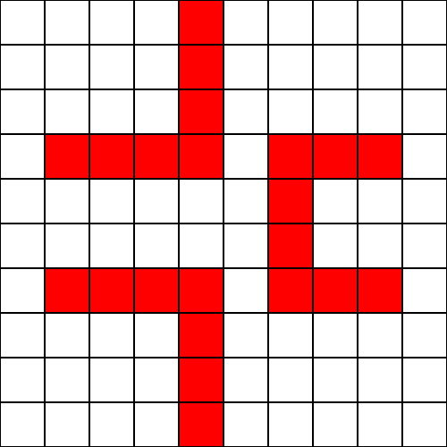
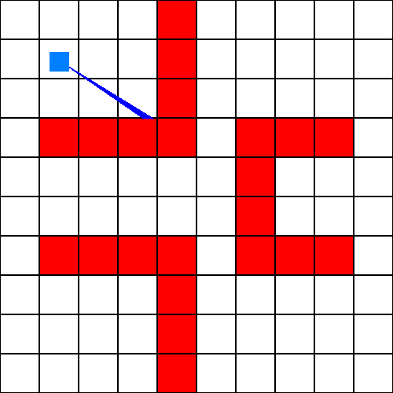
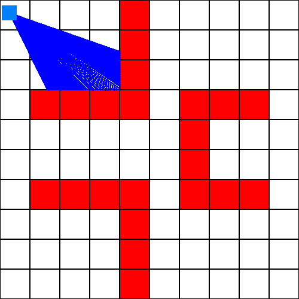

De la 3D avec le Raycast
En général, le rendu d'un jeu vidéo 3D se fait via différentes APIs graphiques, comme OpenGL ou Direct3D. Cependant, ces APIs nécessitent une accélération matériel, via la carte graphique. En effet, elle demande beaucoup de performances, et sont presque irréalisables sans cela. Cependant, comment faire pour afficher de la 3D, sans accélération matérielle ? La technique la plus efficace, utilisée depuis les années 90, est le Raycast.Commencer par... de la 2D
Projeter de la 2D
Nous voulons faire un jeu 3D. Alors, pourquoi donc commencer par de la 2D ? Dans le cas du Raycast, c'est l'un des meilleurs moyens pour comprendre l'idée géénrale de la technique. En effet, le Raycast est, en réalité, une projection en 3D d'un environnement 2D. La première chose à faire est de définire cet environnement.
Pour commencer, nous allons créer une simple map en 2D. Pour des raisons de clareté, nous allons aussi définir un moyen d'afficher cette map de dessus (donc, en 2D pur). Commençon simplement, en disant que les cases blanches sont du vide et les cases rouges des murs. Travaillons sur cette map :
Notre problème ici, pour le rendu 3D, est de savoir comment afficher les éléments de cette map en 3D, avec des performances tolérables. Avec les APIs modernes, la puissance de calcul est suffisante pour afficher tous les éléments 1 par 1, et calculer en temps réel lesquels afficher et ne pas afficher. Dans notre cas, il faudrait générer 22 cases contenant des murs. Sans accélération matérielle, cette étape devient vite très demandante en ressources, et les performances peuvent devenir catastrophique (surtout sur une map plus grande). Il faut donc agir sur l'algorithme pour éviter ce problème.
La transformation que nous allons faire va nous permettre d'économiser des ressources, sans pour autant donner un résultat affreux. L'idée ici est de n'afficher que le strict nécessaire au rendu 3D, et d'éviter d'en afficher trop. Cependant, le problème est de savoir quels objets afficher et lesquels ne pas afficher. C'est la que le Raycast rentre en jeu, puisqu'il s'agit d'une technique permettant de faire cela. Nous allons voir quels objets doivent être affichés via la technique de lancer de rayons, ou, traduit en anglais, "Raycast".
Le lancer de rayons
L'idée ici va être de détecter tous les objets à afficher (donc, devant la caméra) grâce à la technique des rayons. Pour cela, nous avons besoin de la map, de la position caméra et de la rotation de la caméra. Avec ces données, nous allons tracer un rayon, qui va nous permettre de savoir quels objets afficher. En marquant la caméra par un point bleu clair et le rayon par une ligne bleu foncé, le lancer ressemble à ça :
Avec ce simple rayon, nous pouvons déjà savoir que le mur touché devra être afficher. Bien évidemment, un seul mur ne suffit pas. En agrandissant le nombre de rayons, et en les rapprochant, nous pouvons définir tout un point de vue, qui représente toute la partie bleu foncé sur cette image :
Le nombre de rayon et leur espacement dépent des besoins du jeu / du joueurs, des capacités de l'ordinateur du joueur, de la taille de la map... Dés que vous avez tous les objets nécessaires, vous pouvez les afficher sur l'écran. Cette étape peut dépendre de beaucoup de choses, et nous en verrons quelques exemples juste après. Mais avant, mettons précisément au point notre algorithme de lancer de rayon.